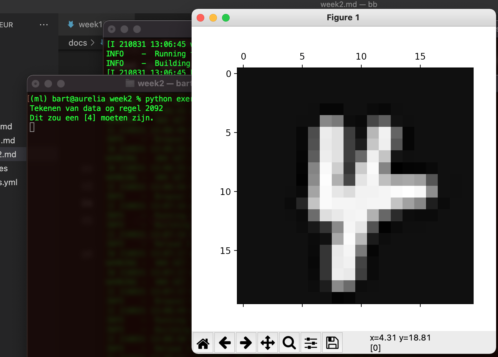
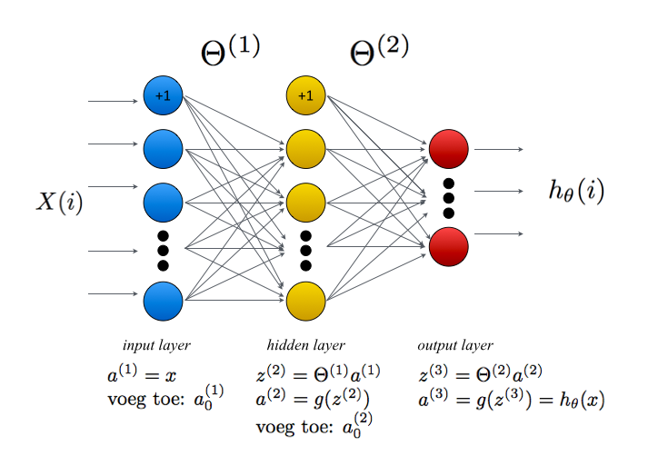
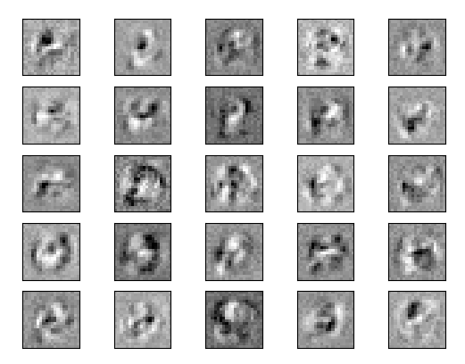

Deel 2 - opgaveset 2¶
Inleiding¶
Deze week werken we met een standaard dataset, de zogenaamde MNIST dataset: een set van zevenduizend gray scale afbeeldingen van cijfers en letters geschreven door middelbare scholieren. Werken met de MNIST dataset is de hello world van machine learning: vroeg of laat krijg je ermee te maken. Deze week programmeren we zelf een neuraal netwerk aan de hand van reeds geleerde gewichten; in de laatste week zullen we een framework gebruiken in een poging een andere dataset te classificeren.
De set die we in deze week gebruiken is een subset van de oorspronkelijke dataset. Het gaat om vijfduizend samples, waarbij elk sample een plaatje van 20 bij 20 pixels is dat een getal van 0 tot 9 representeert. Elke kolom van deze 20 × 20 matrix is onder de vorige geplakt, zodat er uiteindelijke een 400 ×1 vector ontstaat. Deze vectoren zijn weer getransponeerd, zodat onze dataset \(X\) uiteindelijk een 5000 × 400 matrix is.
In deze matrix is $x^{(1)}$ de vector van het eerste plaatje, $x^{(2)}$ de vector van het tweede plaatje, enzovoort. Behalve deze X-matrix is er in de data ook een 5000×1 vector y gegeven, waarin per plaatje is aangegeven welk cijfer dit representeert. Om problemen met de 0 te voorkomen, is in deze vector 0 weergegeven als 10.
De startcode van deze week is hier te downloaden. Opnieuw wordt deze opgave doorlopen door het script exercise2.py. Dit script importeert de functies uit uitwerkingen.py en runt die op volgorde. Het is de opgave om deze uitwerkingen af te maken. Bestudeer beide scripts om een idee te krijgen van de werking.
1. het visualiseren van de data¶
Zoals altijd gaan we eerst de data visualiseren. In dit geval betekent dat een vector uit \(x\) weer transformeren in een 20×20 gray scale plaatje. Maak hiervoor de functie plotNumber() af. Omdat je weet dat de vector \(x^{(i)}\) het i-de plaatje uit de dataset representeert, kun je deze vector eenvoudig weer terug omzetten in een 20×20 matrix en die tekenen. Maak daarbij gebruik van de methode numpy.reshape en van matplotlib.matshow. Het script roept de methode plotNumber aan met een willekeurige vector uit de matrix X. Het toont het nummer op de console, en het cijfer dat het plaatje zou moeten voorstellen. Op die manier kun je eenvoudig checken of je uitwerking correct is.

Als je deze opgave hebt afgerond, kun je het script aanroepen met skip als command line parameter: het tekenen wordt dan overgeslagen.
2. het neurale netwerk - forward propagation¶
Het neurale netwerk dat we voor deze week gaan uitprogrammeren bestaat uit drie lagen. De input van het netwerk zijn de 20×20 plaatjes van de handgeschreven cijfers, dus de input-laag bestaat uit 400 nodes. De middelste verborgen laag heeft 25 nodes en de output-laag heeft tien nodes – één voor elk cijfer van nul tot en met negen. Gegeven een bepaalde input moet één van de tien output nodes de hoogste waarde hebben.

2a: de sigmoid functie¶
Het bepalen van het cijfer dat door het plaatje wordt gerepresenteerd is feitelijk een classificatie probleem: de input vector \(x^{(i)}\) moet immers geclassificeerd worden als één van de cijfers 0 tot en met 9. Zoals tijdens de theorieles is besproken, hebben we voor dergelijke problemen de sigmoid functie \(g(z)\) nodig. De formule daarvan is als volgt:
Implementeer de methode sigmoid in uitwerkingen.py. Maak hem zo, dat je er zowel een getal als een vector aan kunt meegeven. In het eerste geval moet de functie de sigmoid-waarde van het getal retourneren, in het tweede geval moet hij een vector retourneren met de sigmoid-waarde van elk individueel element in de input-vector. Je kunt gebruik maken van de numpy-functie exp().
Als je klaar bent, kun je het script exercise2.py runnen. Deze roept de methode vijf keer aan: drie keer met individuele getallen -10, 0, en 10; vervolgens met deze drie getallen als een kolomvector en als een rijvector.
2b: omzetten van een vector naar een matrix¶
We beginnen met het omzetten van de rijvector \(y\) naar een matrix. Voor het berekenen van de kost van het netwerk moeten we namelijk deze vector omzetten in een 5000×10 matrix van enen en nullen, waarbij het i-de element 1 is en de rest 0. Als bijvoorbeeld het label in \(y\) gelijk is aan 5, dan moeten we deze rij omzetten in een 10-dimensionale vector met een 1 op positie 5 en een 0 op de rest. Omdat de 0 in de y-vector gerepresenteerd wordt als 10, moet deze in de resulterende matrix een 1 krijgen op de eerste positie (met index 0).
Maak de methode get_y_matrix() in uitwerking.py af. Hierbij kun je gebruik maken van de methode csr_matrix uit scipy om op basis van y de matrix y_vec te maken. Let er daarbij wel op dat de y-vector 1-based is, terwijl de resulterende matrix 0-based moet zijn. Zie het onderstaande code-fragment voor een voorbeeld (je kunt ook gebruik maken van de methode todense() om een zogenaamde ijle matrix te maken):
>>> import numpy as np
>>> from scipy.sparse import csr_matrix
>>> cols = np.array([ 2,1,3,5 ])
>>> rows = [i for i in range(len(cols))]
>>> data = [1 for _ in range(len(cols))]
>>> width = max(cols) + 1 # arrays zijn zero-based
>>> y_vec = csr_matrix((data, (rows, cols)), shape=(len(rows), width+1)).toarray()
>>> y_vec
array([[0, 0, 1, 0, 0, 0, 0],
[0, 1, 0, 0, 0, 0, 0],
[0, 0, 0, 1, 0, 0, 0],
[0, 0, 0, 0, 0, 1, 0]])
>>>
Als je klaar bent, kun je het script exercise2.py opnieuw runnen om de geretourneerde waarde te controleren.
2c. voorspel het getal en bepaal de kost van deze voorspelling.¶
Implementeer nu de methode predict_number. Maak hierbij gebruik van het stappenplan dat is gegeven in de afbeelding van het netwerk hierboven, en van het commentaar in de opgave. Let er bij je implementatie op dat de matrix X de waarden voor de input-nodes als rij bevat (400 rijen), terwijl de matrices \(\Theta^{(1)}\) en \(\Theta^{(2)}\) de waarde voor elke node als kolom bevatten (zo is \(\Theta^{(1)}_{2,3}\) het gewicht tussen de derde input-node en de tweede verborgen node). Voorzie de data van de juiste indices en transpositioneer de matrix waar dat nodig is. De output van deze methode is een 5000 × 10 vector die voor elk getal de waarschijnlijkheid dat de input dat getal is weergeeft.
Om de accuratesse van deze voorspelling te bepalen, moeten we deze voorspelling vergelijken met de betreffende regel uit de y_matrix die we in het eerste deel van deze opgave hebben gemaakt. Dat gebeurt in de methode compute_cost(). De formule voor de kost is als volgt:
Als je deze drie methoden hebt geïmplementeerd, kun je het script exercise2.py opnieuw aanroepen. Hier wordt begonnen met min of meer willekeurige waarden van de Theta's. We zetten deze niet op 0 (waarom niet?), maar verdelen we uniform in de range \([-0.12, 0.12]\) – zie hiervoor de methode initialize_random_weights in het script. Deze waarde is gebaseerd op het aantal nodes in het netwerk en wordt benaderd door
waarbij \(L_{in}\) en \(L_{out}\) staan voor het aantal nodes links en rechts van de betreffende laag. Het script voert met deze waarden van de matrices een forward propagation stap uit en toont de kost die correspondeert met de huidige waarden van de beide Theta's. Als het goed is, ligt dit zo rond de 7 (de exact waarde is natuurlijk moeilijk te voorspellen). Vervolgens wordt de huidige accuratesse van het netwerk getoond (die is vanzelfsprekend extreem laag).
3. het neurale netwerk – backpropagation¶
3a. de sigmoïdegradiënt¶
Om de relatieve bijdrage van een node te bepalen, hebben we de afgeleide van de sigmoïdefunctie nodig. Deze is hieronder gegeven.
Implementeer deze afgeleide in de methode sigmoid_gradient. Zorg er opnieuw (net als bij de sigmoïde zelf) voor dat deze methode zowel met scalaire waarden als met vectoren kan werken. Om zeker te weten of het goed is gegaan, roept het script exercise.py deze methode weer aan met drie verschillende waarden.
3b. backpropagation¶
e gaan nu de backpropagation uitprogrammeren in de methode nn_check_gradients. De intuïtie hierbij is als volgt: voor een observatie \((x^{(i)}, y^{(i)})\) doen we eerst een forward-propagation stap, waarbij we de voorspelling \(a_3 = h_\Theta(x^{(i)})\) uitrekenen. Als we die hebben bepaald, willen we voor elke node in elke laag in het netwerk bepalen wat de bijdrage van deze node aan de totale fout is geweest. Deze fout geven we weer met \(\delta_j^{(l)}\), waarbij \(l\) de laag en \(j\) het nummer van de betreffende node is.
Voor de output-laag is de fout redelijk rechttoe-rechtaan te bepalen: dit is per node het verschil tussen diens output en de gewenste output (zoals opgeslagen in de matrix y_vec).
Voor de verborgen nodes is dit iets complexer: de fout in laag \(l\) wordt berekend aan de hand van de gemiddelde fout in de laag \(l+1\). Zie het stappenplan hieronder; we adviseren je om de backpropagation uit te programmeren in een for-lus (for i in range (m):), omdat een vectoriële implementatie complex is en een naïeve implementatie waarschijnlijk leerzamer.
Stap 1
Gegeven een input \(a^{(i)}\), doe een standaard forward-propagation door gebruik te maken van de code uit predict_number; je moet de code hier wel herhalen, omdat je de verschillende waarden nodig hebt tijdens de backpropagation.
Stap 2
Zet voor elke output-node k in de derde laag
Stap 3
Voor elke node in de verborgen (tweede) laag bepaal je diens 'bijdrage' aan de totale fout door het inproduct van de fout en de matrix (element wise) te vermenigvuldigen met de afgeleide van de sigmoïdefunctie (die we in het eerste deel van deze opgave hebben gemaakt).
Stap 4
Deze bijdrage tellen we op bij de andere bijdragen; op deze manier creëren we twee nieuwe matrices \(\Delta^{(2)}\) en \(\Delta^{(3)}\), die dezelfde dimensionaliteit hebben als \(\Theta^{(2)}\) en \(\Theta^{(3)}\). (De variable l staat voor het nummer van de laag en is in dit geval 2 of 3.)
Stap 5
Als we deze stappen voor alle \(m\) observaties hebben gedaan, delen we de beide delta-matrices door het aantal observaties (element wise) om de gemiddelde fout per node voor de huidige waarden van de beide theta-matrices te verkrijgen. Retourneer deze beide waarden uit de methode nn_check_gradients.
Wanneer je dit hebt gedaan, kun je het script verder laten runnen. Nu wordt van beide matrices de totale som afgedruk; die is nog behoorlijk hoog en het is de bedoeling dat we deze som, en de totale kosten, naar beneden brengen. Daar gaat de laatste opgave over.
4. trainen van het neurale netwerk¶
Nu het netwerk goed is geïmplementeerd, kunnen we het gaan trainen. Het idee van die training is dat de waarden in de matrices langzaamaan naar een optimale waarde convergeren, waarmee de voorspelling voor een bepaalde input correspondeert met een goede output (een goede classificatie).
Om dit gedaan te krijgen, maken we gebruik van de methode minimize uit scipy.optimize. Deze methode heeft een aantal parameters, waarvan één het maximaal aantal iteraties is. De methode stopt wanneer het maximaal aantal iteraties is behaald, of het minimale waarde van de kosten heeft gevonden (wat maar het eerst optreedt). Initieel staat deze parameter op 30. Let op: het trainen van het netwerk kan even duren (je krijgt wel het iteratienummer te zien).
Je hoeft voor deze opgave niets uit te programmeren. Bestudeer de werking van minimize en experimenteer met verschillende waarden voor de parameter maxiter om een goed beeld te krijgen van de werking van het geheel. Bekijk ook goed hoe de waarden van de matrices worden doorgegeven aan deze methode.
Als het geheel is afgerond, worden de nieuwe kost en de nieuwe accuratesse van het netwerk getoond. Ook wordt er een plot gemaakt van de waarden van de matrix in de verborgen laag – zie de figuur hieronder. Met een beetje moeite en goede wil kun je zien dat deze matix een gevoeligheid heeft ontwikkeld voor horizontale en verticale lijnen en voor ronde vormen in de input.

Met de getrainde waarde van het netwerk kunnen we nu voorspellingen doen over het getal dat door een afbeelding wordt gerepresenteerd. Maar de accuratesse is niet de enige metriek die voor de bepaling van hoe goed een netwerk is van belang is. Hierover gaan we het volgende week hebben, wanneer we de confusion matrix bespreken.